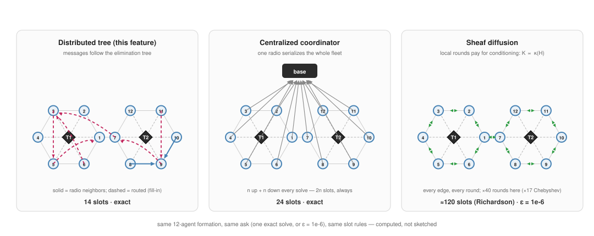

Three methods, one communication model
Any fair comparison needs all contestants charged by the same rules. This page fixes one radio model, derives each method's cost under it as a boxed proposition with a proof sketch, then overlays the one thing the logical model hides, physical routing, and measures it instead of assuming it away.
The contestants, on the same harmonic-extension system $Hq^\star = -Bp$:
- Distributed tree (this feature): exact, factor once, message-passing solve on the elimination tree.
- Centralized coordinator: exact. Every agent ships its data to one solver and receives its answer back. Two variants: an ideal base station (every agent one hop from the coordinator, the most generous possible reading), and an in-network coordinator (one of the agents, and everything routes to it).
- Sheaf diffusion: iterate locally until within $\varepsilon$ of $q^\star$. Three variants, so diffusion gets its best self: plain Richardson with optimal step, Chebyshev-accelerated (same locality, $\sqrt\kappa$ iterations), and CG with its global inner products charged honestly.

The model
Radios are half-duplex, one packet per slot: in any slot a node is in at most one message, as sender or receiver. A method's cost is its makespan, the number of slots until the answer is in place, computed by greedy earliest-ready scheduling, siblings serializing at a shared receiver. Diffusion's per-round neighbourhood exchange is charged $\Delta$ slots (an edge coloring, and we generously omit the $+1$).
What each method costs
Write $n$ for the number of agents, $T$ the supernode elimination tree, $\mathrm{cp}(T)$ its sibling-serialized critical path, $\Delta$ the maximum degree, $\kappa = \kappa(H)$ the condition number, and $\varepsilon$ the diffusion tolerance.
Makespan $= 2\,\mathrm{cp}(T)$, with $\mathrm{depth}(T) \le \mathrm{cp}(T) \le \mathrm{depth}(T)\cdot\max_j |\mathrm{child}(j)|$. Under a nested- dissection ordering of a chain, ring, or bounded-degree planar formation, $\mathrm{depth}(T) = O(\log n)$, so the makespan is $O(\log n)$ slots, independent of $\kappa$, and exact.
Sketch. The forward pass is a gather: each supernode sends one packet to its parent after hearing all children, so the greedy schedule completes in exactly the critical path, and the backward pass mirrors it. Balanced-separator orderings halve the problem per level, giving logarithmic depth (Lipton–Tarjan separators for the planar case). ∎
Makespan $= 2n$ exactly.
Sketch. The coordinator's single radio admits one packet per slot, and it must receive $n$ distinct payloads and transmit $n$ distinct answers: $2n$ is a pigeonhole lower bound, and the round-robin schedule attains it. No compute speed, bandwidth, or placement assumption can beat it. ∎
Makespan $\ge 2(n-1)$, attained up to an additive diameter term by greedy convergecast, and routing congestion only adds.
Sketch. Same pigeonhole at the coordinator, but now packets also occupy the radios of every relay on their route, and the benchmark simulates the greedy store-and-forward schedule rather than bounding it. ∎
Richardson with optimal step contracts by $\rho = \frac{\kappa-1}{\kappa+1}$ per round, so reaching $\varepsilon$ costs $K_R = \lceil \ln\varepsilon / \ln\rho \rceil = O(\kappa \ln \tfrac1\varepsilon)$ rounds and $K_R \Delta$ slots. Chebyshev acceleration improves this to $O(\sqrt\kappa \ln \tfrac1\varepsilon)$ rounds with the same per-round locality. CG matches Chebyshev's iterations but adds two global inner products per iteration, each an all-reduce costing $2\,\mathrm{cp}$ of a BFS spanning tree $\ge$ twice the graph radius.
Sketch. Standard Chebyshev/CG bounds for SPD systems ($\lVert e_k \rVert \le 2\theta^k \lVert e_0\rVert$, $\theta = \frac{\sqrt\kappa - 1}{\sqrt\kappa + 1}$); the slot charges are the model applied to one round. The dependence on $\kappa$ is the point: conditioning is a communication cost for iterative methods, and $\kappa(H)$ grows with formation size. On a 510-agent chain it exceeds $10^5$. ∎
For an agent: the tree charges you by your formation's shape (tree depth), centralized charges you by fleet size, and diffusion charges you by conditioning. These are different currencies, and the tables below convert them all to slots.
Measured: the headline rows
Full tables for all five topologies are on the benchmarks page. The largest size per topology, in slots:
| topology | agents | tree (ND) | central (base) | central (in-net) | Chebyshev | Richardson |
|---|---|---|---|---|---|---|
| grid | 571 | 34 | 1142 | 1148 | 1008 | 33196 |
| chain | 510 | 28 | 1020 | 1018 | 4720 | 1462064 |
| ring | 511 | 28 | 1022 | 1528 | 4730 | 1467792 |
| random geometric | 254 | 52 | 508 | 506 | 12844 | 415428 |
| star | 255 | 506 | 510 | 508 | 471932 | 114984022 |
Three regimes, cleanly:
- Grids, chains, rings, RGGs: the tree with nested-dissection ordering wins by 10–36× over the best alternative, and the gap widens with fleet size, $O(\log n)$ against $\Theta(n)$.
- The star is the honest degenerate case: one hub sits in every separator, so the tree collapses to a single chunk and ties the coordinator (506 vs 510). Nothing does better, since the hub's radio is a $2n$ pigeonhole for every method, and diffusion is catastrophic ($\kappa = n{-}1$... $10^8$ slots).
- Diffusion is never competitive at $\varepsilon = 10^{-6}$, even Chebyshev-accelerated, even with all-reduces donated to CG for free. Its locality is genuine, but its $\kappa$-bill is bigger.
The physical overlay: what routing really costs
The logical model treats one tree edge as one slot. Physically, a supernode's parent is defined by elimination order, not radio range. Fill-in creates tree edges between agents that are not neighbours, and those messages must be routed. We measure this instead of assuming it:

| formation, ordering | messages | mean hops | 1-hop share | total transmissions |
|---|---|---|---|---|
| 20×20 grid, default | 355 | 12.3 | 3% | 4368 |
| 20×20 grid, nested dissection | 266 | 9.8 | 18% | 2605 |
| RGG $n=254$ | 71 | 3.1 | 7% | 224 |
The routing tax is real, and it is exactly the number the naive "tree edges are local" story gets wrong. Three things keep it from changing the verdict:
- Crude upper bound. Charging every message its full hop count serially bounds the grid's physical makespan by $\approx 30 \times 9.8 \approx 300$ slot-equivalents, still $2.6\times$ under the in-network coordinator's simulated 792, and routing hurts the coordinator too (every packet funnels).
- Diffusion pays zero routing, since its exchanges are physical-neighbour by construction. It remains uncompetitive anyway (its $\kappa$-bill dwarfs the tree's routing bill).
- A floor shared by everyone. Any exact method must move information across the formation's diameter, so on a chain no schedule beats $\Theta(\mathrm{diam})$ physically, whether tree, coordinator, or otherwise. The tree's $O(\log n)$ is a statement about the logical schedule. Physics adds the diameter floor back for 1-D formations, and for everyone equally.
A full physical-makespan schedule (routing, pipelining, and congestion co-scheduled) and a host-assignment rule chosen to minimize hop counts are future work. The measured hop distributions above bound the gap between the logical and physical stories, but they do not close it.
Verdict
For formations with sublinear separators (grids, rings, chains, proximity graphs, i.e. everything a fleet actually flies), the distributed tree with a nested-dissection ordering is the only contestant that is simultaneously exact, decentralized in memory, and logarithmic in communication, and the measured margins over both a maximally-generous coordinator and a maximally-accelerated diffusion are one to two orders of magnitude. Its two honest limits are the star (where no method wins) and the physical routing factor (measured at $\sim 10\times$ worst case, and shrinking under better orderings).